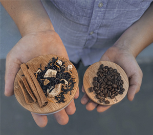
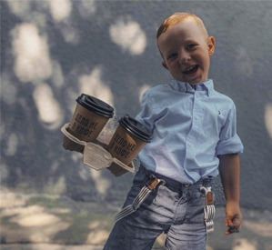
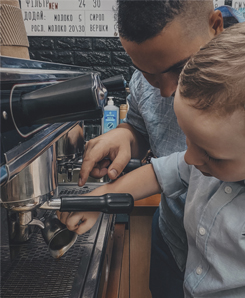

Чай
Чай - це найближча та найпопулярніша альтернатива каві. Якщо б у кав'ярнях не існували різновиди чаю, то ми би втрачали дуже багато наших потенційних гостів. Більш того, навіть наші улюблені постійні споживачі можуть в один момент випити чай, бо до кави звикли та захотілось різноманіття. А якщо є ще й авторський чай, то взагалі можемо підібрати напій на будь який смак.
Журавлина - Апельсин
Журавлина? Тааак, неперевершене поєднання кислої журавлини і солодких меду та лимону.
Стакан 1 шт.(картон)Гофра(термопояс)ЖуравлинаМедАпельсинВода (гар.)Вихід напою:
360 мл.1 шт.40 гр.20 г.15 гр.--- мл.360 мл.
420 мл.1 шт.60 гр.30 г.30 гр.--- мл.420 мл.
Гарячий мохіто
Якщо ваш гість дуже хоче чогось незвичного, то одразу пропунуйте цей екзотичний напій. Цей напій родом із Морокко, і заварюється він за допомогою спецій, м'яти, лимону та меду. Жодного листочку традиційного чаю.

Стакан 1 шт.(картон)Гофра(термопояс)Кориця (паличка)МедМ'ятаЛимонГвоздикаВода (гар.)Вихід напою:
360 мл.1 шт.1 шт.20 гр.15 гр.15 гр.3 шт.--- мл.360 мл.
420 мл.1 шт.1 шт.30 гр.20 гр.15 гр.4 шт.--- гр.420 мл.

Ягідний
Цікаве поєднання полуниці, малини та чорної смородини. В залежності від сезону, ягоди можуть бути замінені на інші.
Стакан 1 шт.(картон)Гофра(термопояс)Ягоди(ас.)МедЛимонВода (гар.)Вихід напою:
360 мл.1 шт.40 гр.20 г.15 гр.--- мл.360 мл.
420 мл.1 шт.60 гр.30 г.30 гр.--- гр.420 мл.
Казковий
"Дуже хочеться смачний чай, але такий, щоб я за ним повернувся(лась)!". Цю фразу бариста чують майже кожен другий напій. У чай "Казковий" дадно максимальна кількість смачних та дуже гарно поєднаних між собою продуктів, що робить чай неймовірно загадковим та смачним.
Стакан 1 шт.(картон)Гофра(термопояс)МедМ'ятаЛимонАпельсинЯблукоСироп "Гренадін"Вода (гар.)Вихід напою:
360 мл.1 шт.20 гр.15 гр.10 гр.10 гр.15 гр.10 мл.--- мл.360 мл.
420 мл.1 шт.30 гр.20 гр.15 гр.15 шт.20 гр.10 мл.--- гр.420 мл.
Чай в асортименті
Нажаль, чи на радість багато людей не готові куштувати авторські напої, особливо якщо це чай. Тож у нашему меню завжди є звичайний розсипний чай у фільтр-пакетах. Головне людям завжди пояснювати що чай саме розсипний, а фільтр-пакет ми використуваємо виключно для зручності гостей.
Зазвичай чай є чорний, зелений та фруктовий.

Стакан 1 шт.(картон)Гофра(термопояс)Фільтр-пакетЧай в ас.Вода(гар.)Вихід напою:
360 мл.1 шт.1 шт.3 гр.--- мл.350 мл.
420 мл.1 шт.1 шт.3 гр.--- мл.450 мл.